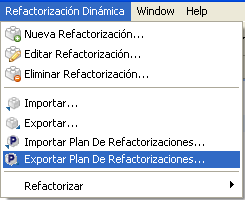
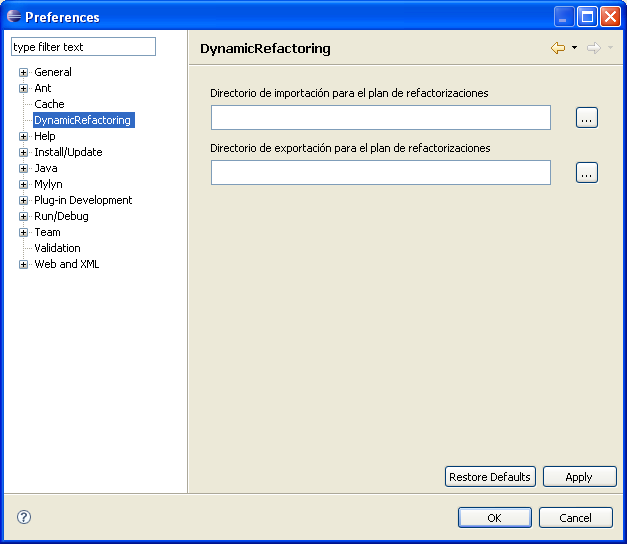
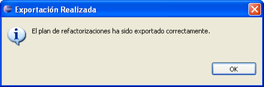

Exportar un plan de RefactorizacionesExportar un plan de Refactorizaciones
Exportar un plan de RefactorizacionesExportar un plan de RefactorizacionesEn esta secci�n aprender� c�mo exportar el plan de refactorizaciones que ha sido ejecutado sobre un proyecto determinado, de forma que luego pueda ejecutarse en un nuevo proyecto con las caracter�sticas pertinentes.

Seleccione Exportar plan de Refactorizaciones... en el menú
La ubicaci�n por defecto en la que se exportar� el plan de refactorizaciones se puede establecer dentro del menú Window > Preferences de Eclipse en el apartado "Directorio de exportaci�n para el plan de refactorizaciones" del submenú Dynamic Refactoring.

menú Preferences

Confirmaci�n
Se crear� una carpeta con el plan de la refactorizaciones cuya estructura se corresponde con la siguiente:
- Una carpeta llamada refactorings que contiene una carpeta por cada una de las refactorizaciones
que conforman en plan.
- Un fichero XML llamado refactoringPlan.xml que guarda una descripci�n de las refactorizaciones ejecutas.
- Un fichero DTD llamado refactoringPlanDTD.dtd que contiene la estructura que tiene que tener el fichero refactoringPlan.xml para que pueda ser interpretado por la aplicaci�n.
- Una carpeta llamada repository que contiene todos los ficheros .class correspondientes a los mecanismos (acciones, precondiciones y postcondiciones) que componen las refactorizaciones del plan.
Para cancelar la operaci�n de exportaci�n se puede pulsar el bot�n Cancelar.